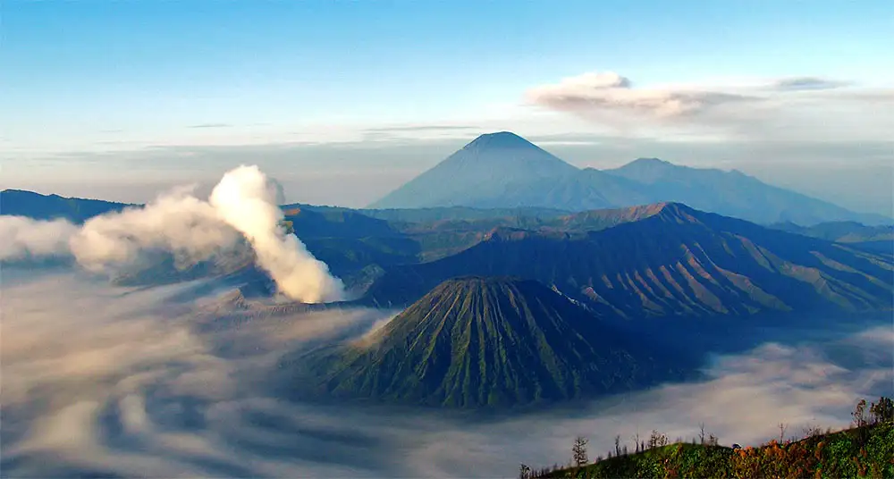

Mode Gelap
Jelajahi Keindahan Budaya dan Alam Indonesia, Bersama Kami
Indonesia terkenal di mancanegara sebagai negara dengan alam yang indah. Negara kepulauan seluas 1,91 juta km2 ini memang memiliki bentang alam yang memesona, mulai dari Aceh hingga Papua. Tak heran jika jumlah wisatawan yang datang terus bertambah, baik dari dalam maupun luar negeri untuk melihat langsung ragam keindahan wisata alam yang ada di Indonesia. Mendatangi berbagai tempat yang indah di Indonesia pasti akan membuat Anda terkesima.
